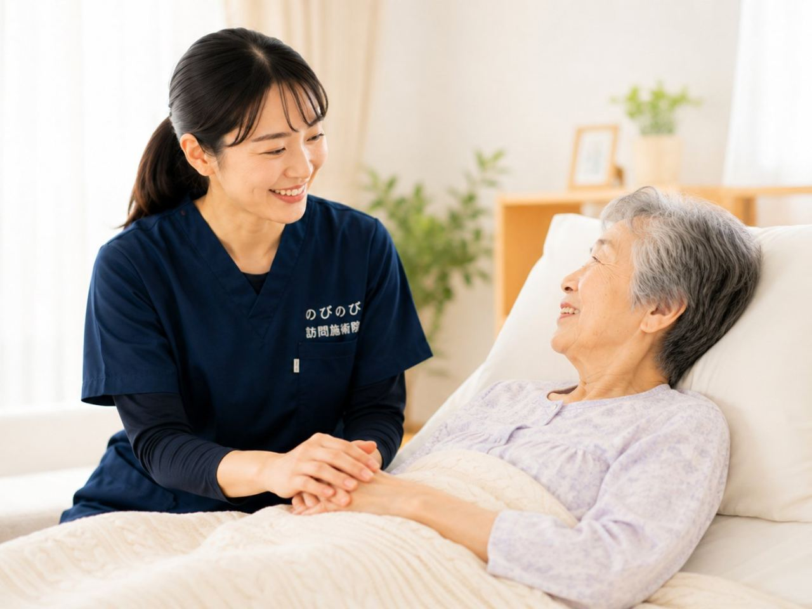
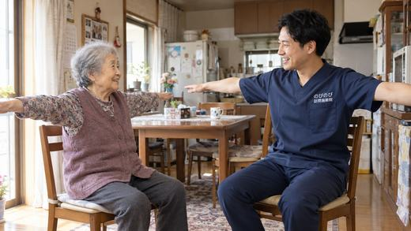
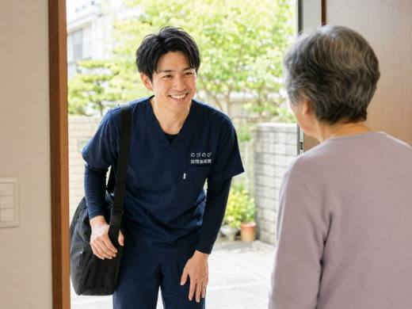
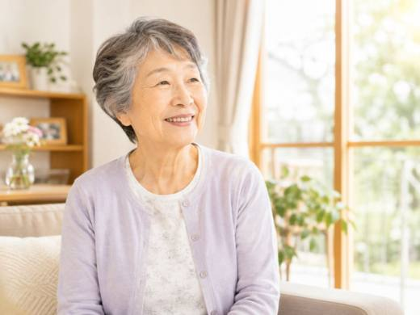
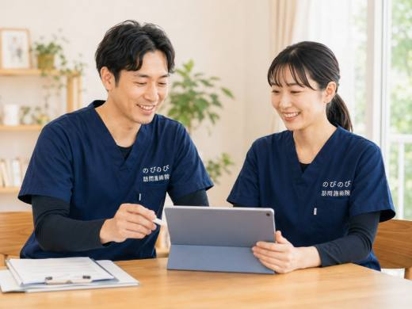

寝つけない、夜中に何度も目が覚める。眠りの乱れには、体の痛みやこり、冷え、生活リズムの乱れ、こころの状態などが重なっていることがあります。不眠そのものが保険の対象になるわけではありませんが、眠りをさまたげている肩こり・腰の痛み・手足の冷えなどについて医師が施術を必要と認めれば、はり・きゅうの医療保険でケアでき、結果として休みやすい体づくりにつながることがあります。強い気分の落ち込みや、急な不眠が続くときは、まずかかりつけ医にご相談ください。自己負担は1割の方で1回およそ395円（総額3,950円）が目安です。 のびのび訪問施術院では、大阪府・兵庫県の対応エリアを中心に、通院がむずかしい方のご自宅へうかがって施術しています。
先に結論を書きます。不眠そのものを治すものではありません。眠りをさまたげている肩こり・冷え・痛みなどを和らげることで、休みやすくなる方がいる、という位置づけです。強い不眠が続くときは医療機関にご相談ください。
眠れないつらさは、体からのサインのことも
年齢を重ねると、眠りは浅く、途中で目が覚めやすくなるといわれます。それに加えて、肩や腰の痛み、手足の冷え、日中に体を動かさないことによる生活リズムの乱れなどが重なると、寝つきの悪さや途中で目が覚めるつらさにつながります。
眠れない原因はひとつではなく、体の状態が関わっていることもよくあります。まずは、眠りをさまたげている要因を一緒に整理していくことが出発点になります。
まず、医療機関に相談したほうがよいとき
急に眠れなくなってそれが続く、気分の落ち込みや意欲の低下をともなう、日中もつらくて生活に支障が出ている。このようなときは、こころの不調や、別の病気が背景にあることもあります。
睡眠薬を飲んでいる方の調整も含め、まずはかかりつけ医や専門の医療機関にご相談ください。訪問鍼灸マッサージは、こうした医療に代わるものではなく、体の面から休みやすさを支える立場でお手伝いをします。
鍼灸ができるのは、休みやすい体づくり
はりやお灸には、こわばった筋肉をゆるめ、血のめぐりをうながし、体の緊張を和らげる働きが期待できます。肩や首、背中のこりが和らぐと、体がほぐれて休みやすくなる方もいらっしゃいます。一方で、変わらないとおっしゃる方もいて、感じ方には個人差があります。
手足の冷えが和らぐことで、寝つきが楽になったと話してくださる方も。眠りそのものを操作するわけではありませんが、眠りをさまたげている体のつらさを和らげることで、間接的に睡眠を後押しできればと考えています。
冷えと睡眠のつながり
手足が冷えて眠れない、というのは高齢の方に多い悩みです。東洋医学では、体のめぐりの滞りや冷えが、眠りの浅さに関わると考えます。お灸のじんわりとした温かさや、足・ふくらはぎへの手技は、めぐりを整え、冷えにくい体を保つ助けになります。
冷えの強い方には、こうした温めるケアがなじみやすい傾向があります。その方の体質や、どこが冷えるかを確かめながら進めます。
生活のリズムを、無理なく整える
眠りを整えるには、日中の過ごし方も関わります。朝に光を浴びる、日中に体を少し動かす、昼寝は短めにする、寝る前のカフェインを控える。どれも難しいことではありません。
ただ、加減がつかみにくいものです。訪問のたびに、その方の生活に合った過ごし方の工夫を、いっしょに負担にならない範囲で考えていきます。体を動かすことがむずかしい方には、寝たまま・座ったままでできる軽い動きもお伝えします。
睡眠薬とのつきあい方・不安について
眠れないと、睡眠薬に頼ることへの不安を口にされる方はよくいらっしゃいます。お薬を始める・調整する・やめるといった判断は医師の役割で、自己判断で急にやめると、かえって眠れなくなることもあります。ご心配なことは、まずかかりつけ医に相談してください。
訪問鍼灸マッサージは、お薬に代わるものでも、やめさせるものでもありません。体のこわばりや冷えを和らげて休みやすい状態に近づけることで、結果として、眠りについての安心につながればと思っています。お薬を飲んでいる方も、そのことを教えていただければ、体調を見ながら無理なくケアを進めます。
ご家族にできること
眠れない日が続くと、ご本人だけでなく、見守るご家族も気疲れしてしまいます。夜間に何度も起きる、昼夜が逆転しかけている、といった様子は、施術の際にお聞かせいただければ、体のケアの参考にします。
必要に応じて、かかりつけ医やケアマネジャーとも情報を共有し、在宅の生活を支える方々と足並みをそろえます。ご家族だけでかかえこまず、まわりと分け合っていくことが大切です。
費用と保険のこと
不眠そのものが保険の対象になるわけではありません。ただし、眠りをさまたげている肩こり・腰の痛み・手足の冷えなど、体のつらさについて医師が施術を必要と認め、通院がむずかしい状態であれば、はり・きゅうの医療保険が使えます。自己負担は1割の方で1回およそ395円（総額3,950円に対して）が目安です。当てはまりそうかどうかは対象になる方の条件で確かめられます。
お支払いは月ごとにまとめてで、その月の施術内容がわかる明細をお渡しします。回数に応じて、週2回ならひと月およそ3,160円（1割の方）といった見当になります。
始めるまでの流れ
はじめに、お電話などで、眠りの困りごとや体のつらさ、通院の状況、かかりつけの医療機関をお聞かせください。眠りをさまたげている体の要因について、鍼灸でできることをご説明します。
強い不調がある場合は、医療機関の受診を先におすすめすることもあります。無理のない範囲から、休みやすい体づくりを一緒に始めましょう。
訪問先でうかがったお話
「マッサージしてもろたら、なんとか寝れへんかなと思って」と、眠りへの期待を話してくださる方がいます。施術のあとに「夜ね、ぐっすり眠れたらいいです」と話される方もいます。眠れないことそのものは保険の対象ではありませんが、眠りをさまたげている肩や腰の痛み・こわばり、手足の冷えについて医師が施術を必要と認めた場合には、はり・きゅうの医療保険の対象になります。足裏は普段ほとんど触られない場所で、押すと強い圧痛が出ることがあります。そうした反応を確かめながら、刺激の量を調整しています。
よくある質問
鍼灸で不眠は治りますか？
不眠そのものを治すものではありません。眠りをさまたげている肩こり・冷え・痛みなどを和らげることで、休みやすくなる方がいる、という位置づけです。強い不眠が続くときは医療機関にご相談ください。
睡眠薬を飲んでいても受けられますか？
はい。お薬の調整は医師の役割ですが、体のケアは並行して受けられます。飲んでいるお薬は事前に教えてください。
夜に来てもらうことはできますか？
対応できる時間はお問い合わせの際にご相談ください。日中のケアでも、体のこわばりや冷えを和らげることで夜の休みやすさにつながることがあります。
寝たきりでも受けられますか？
はい。ベッドの上で、楽な姿勢のまま受けられます。刺激も体調に合わせて弱めから調整します。

だるさ・倦怠感が抜けない高齢の方へ｜体の重さと在宅でできるケア
続きを読む
夜よく眠れない高齢の方へ｜訪問鍼灸マッサージと眠り・自律神経のつながり
続きを読む
むずむず脚症候群で夜眠れないご高齢の方へ｜訪問鍼灸マッサージという補助の選び方
続きを読む
訪問鍼灸マッサージ、ケアマネジャーに相談したほうがいい？｜ケアプランとの関係
続きを読む
高血圧のある方の肩こり・不眠と体のケア｜注意点つき・自宅で受ける訪問鍼灸マッサージ
続きを読む